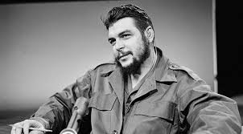

BARAN BİÇER
Anasayfa |
Özgeçmiş |
Kayanaklar |
İletişim

CHE GUEVARA KİMDİR?
Ernesto “Che” Guevara, kısaca Che Guevara ya da el Che, (14 Haziran 1928 – 9 Ekim 1967), Arjantinli doktor. Marksist-Leninist politikacı. Küba gerillaları ile Enternasyonalist gerillaların lideri ve devrimci.
Ernesto Guevara, İspanyol ve İrlanda asıllı bir ailenin beş çocuğunun en büyüğü olarak Arjantin’in Rosario şehrinde dünyaya gelmiştir. Annesinin ve babasının soyu Basklara dayanır. Bask Doğum belgesinde doğum tarihi olarak 14 Haziran 1928 görünmesine karşılık bazı kaynaklarda aynı yılın 14 Mayıs günü doğduğu belirtilmektedir.
Guevara’nın atalarından Patrick Lynch 1715 yılında İrlanda’da Galway’de doğmuş, İrlanda'yı terk edip İspanya'nın Bilbao şehrine, oradan da Arjantin'e gitmiştir. Guevara’nın büyük büyükbabası Francisco Lynch 1817’de büyükannesi Ana Lynch 1868’de doğmuştur.Galway[›] Ana Lynch’in oğlu ve Che’nin babası Ernesto Guevara Lynch 1900 yılında doğmuştur. Guevara Lynch 1927’de Celia de la Serna y Llosa ile evlenmiş ve üç erkek, iki kız çocukları olmuştur.
Tıp eğitimi alırken Latin Amerika’yı baştan aşağı dolaştı ve bu sayede birçok insanın karşı karşıya kaldığı yoksulluğu doğrudan gözlemleyebildi. Bu deneyimler sonucunda bölgedeki ekonomik eşitsizliği ortadan kaldırmanın tek yolunun devrim olduğuna inanarak Marksizm'i incelemeye başladı ve Başkan Jacobo Arbenz Guzmán’ın önderliğinde Guatemala'nın sosyal devrimine katıldı.
Bir süre sonra 1959 yılında Küba’da yönetimi ele geçiren Fidel Castro’nun askeri nitelikli 26 Temmuz Hareketi’nin bir üyesi oldu. Yeni hükümette çeşitli önemli görevlerde bulunduktan, gerilla savaşı teorisi ve uygulamaları üzerine makaleler ve kitaplar yazdıktan sonra diğer ülkelerdeki devrimci hareketlere katılmak üzere 1965 yılında Küba’dan ayrıldı. İlk olarak Kongo-Kinşasa’ya (sonraları Kongo Demokratik Cumhuriyeti) daha sonra da CIA ve Amerikan Ordusu Özel Harekât Birlikleri’nin ortak operasyonu sonrası yakalanacağı Bolivya’ya gitti. Guevara 9 Ekim 1967’de Vallegrande yakınlarındaki La Higuera’da Bolivya Ordusu’nun elindeyken öldürüldü. Son saatlerinde yanında bulunanlar ve onu öldürenler, yargısız infaz edildiğine tanık olmuşlardır.
Ölümünden sonra Guevara dünya üzerinde sosyalist devrimci hareketlerin sembolü haline gelmiştir. Guevara’nın Alberto Korda tarafından çekilen fotoğrafı “dünya üzerindeki en ünlü fotoğraf ve 20. yüzyılın sembolü” olarak nitelenmiştir.